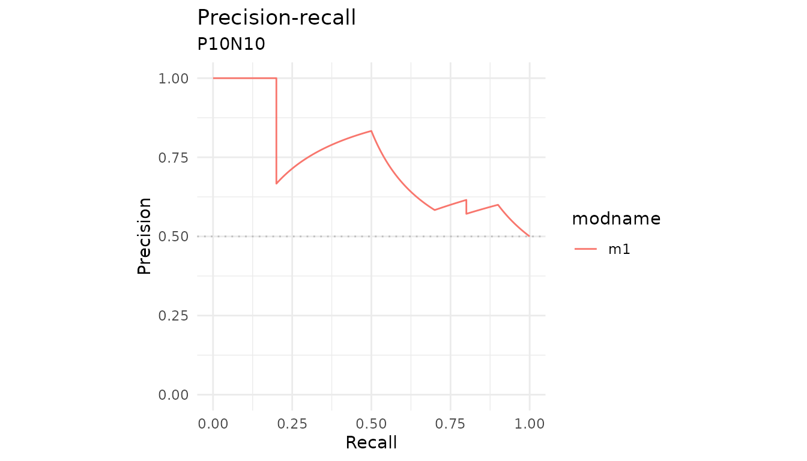
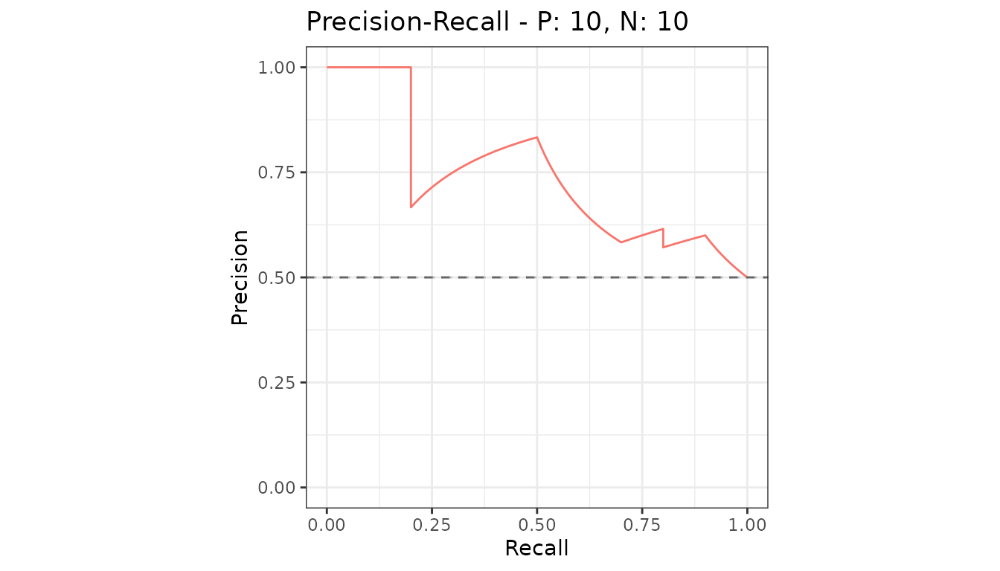
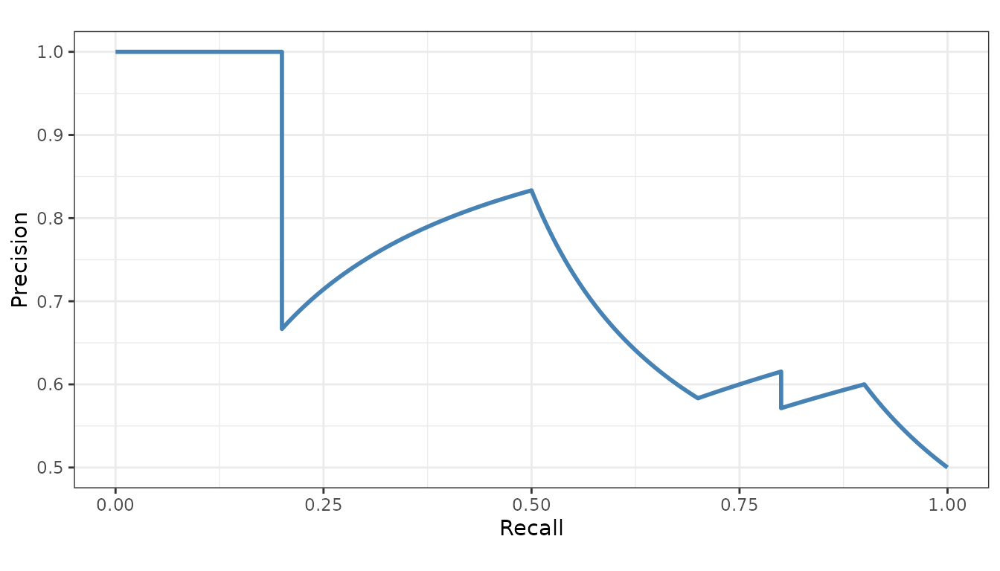
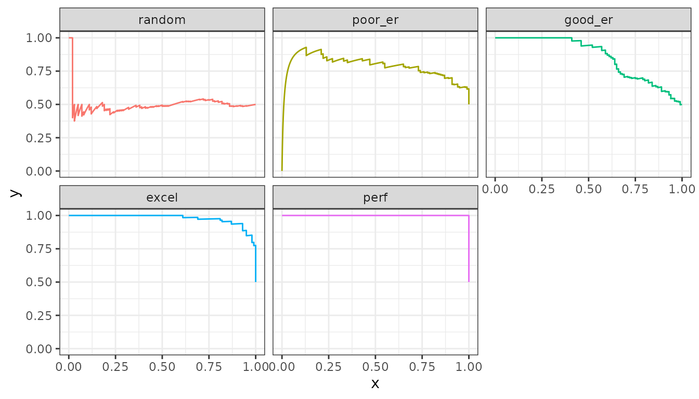

autoplot() returns an ordinary ggplot
object, so the whole of ggplot2 applies to it.
Add layers to the result
autoplot(curves, "PRC") +
labs(title = "Precision-recall", subtitle = "P10N10") +
theme_minimal()
Draw the baseline yourself
The plots leave the precision-recall baseline out, because it sits at the proportion of positives and that differs between datasets. When you are looking at one dataset you know the number, so add it.
baseline <- sum(P10N10$labels == 1) / length(P10N10$labels)
autoplot(curves, "PRC") +
geom_hline(yintercept = baseline, linetype = "dashed", color = "grey40")
Start from the data instead
fortify() is the ggplot2 hook, so a
precrec object can go straight into ggplot()
when you want to build the plot from scratch.
df <- fortify(curves)
head(df)
#> x y modname dsid dsid_modname curvetype
#> 1 0.000 0.0 m1 1 m1:1 ROC
#> 2 0.000 0.1 m1 1 m1:1 ROC
#> 3 0.000 0.2 m1 1 m1:1 ROC
#> 4 0.001 0.2 m1 1 m1:1 ROC
#> 5 0.002 0.2 m1 1 m1:1 ROC
#> 6 0.003 0.2 m1 1 m1:1 ROC
ggplot(subset(df, curvetype == "PRC"), aes(x = x, y = y)) +
geom_line(color = "steelblue", linewidth = 1) +
coord_fixed() +
labs(x = "Recall", y = "Precision") +
theme_bw()
The columns are x, y, modname,
dsid, dsid_modname and curvetype
- already in long form, so mapping color or facets to a model is
direct.
samps <- create_sim_samples(1, 100, 100, "all")
mdat <- mmdata(samps[["scores"]], samps[["labels"]],
modnames = samps[["modnames"]]
)
mdf <- fortify(evalmod(mdat))
ggplot(subset(mdf, curvetype == "PRC"), aes(x = x, y = y, color = modname)) +
geom_line() +
facet_wrap(~modname) +
theme_bw() +
theme(legend.position = "none")
Getting the grob
Multi-panel output - both curve types at once, or several metrics -
is assembled from separate plots. ret_grob = TRUE returns
that assembled object instead of drawing it, for placing in a larger
layout.
g <- autoplot(curves, ret_grob = TRUE)